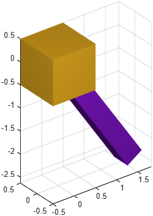

Revolute joint
Class phx.RevoluteJoint | Superclass: phx.base.Joint
phx.RevoluteJoint realizes a kinematic constraint with one degree
of freedom: a rotation about a shared axis (a hinge). The connection points and the rotation axes
are defined in the local space of each body.
joint = phx.RevoluteJoint(bodyA,bodyB) creates a joint between two
bodies attached at their origins, with the rotation axes aligned to the local Z axis of each body.
joint = phx.RevoluteJoint(___,Name,Value) sets connection points and
axes with name-value arguments (PointA, PointB,
AxisA, AxisB).
| Argument | Type | Description |
|---|---|---|
| bodyA, bodyB | phx.Body (scalar) | The two bodies connected by the joint. |
| Property | Type / Default | Description |
|---|---|---|
| PointA | [0 0 0] | Connection point in the local space of body A. |
| PointB | [0 0 0] | Connection point in the local space of body B. |
| AxisA | [0 0 1] | Rotation-axis direction in the local space of body A. |
| AxisB | [0 0 1] | Rotation-axis direction in the local space of body B. |
| Angle | double (read-only) | Current angle about the joint axis, rad (dependent). |
| Overlay | false | Draw the joint as an overlay (always on top). |
Reaction feedback (ForceA, TorqueA,
ForceB, TorqueB) and the
MutualCollisions switch (collisions between the connected bodies,
default false) are inherited from
phx.base.Joint.
clf; view(3); axis equal; grid on; camlight headlight; base = phx.Body("Type", "static", "Position", [0 0 0]); arm = phx.Body("Position", [1.5 0 0], "Shape", {"Box", "Size", [3 0.4 0.4]}); phx.RevoluteJoint(base, arm, "PointB", [-1.5 0 0], "AxisA", [0 1 0]); sim = phx.Simulation; sim.step(4, 400, 1); delete(sim);
